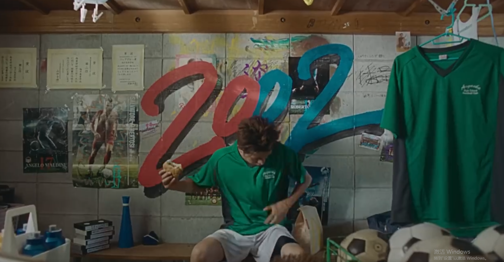
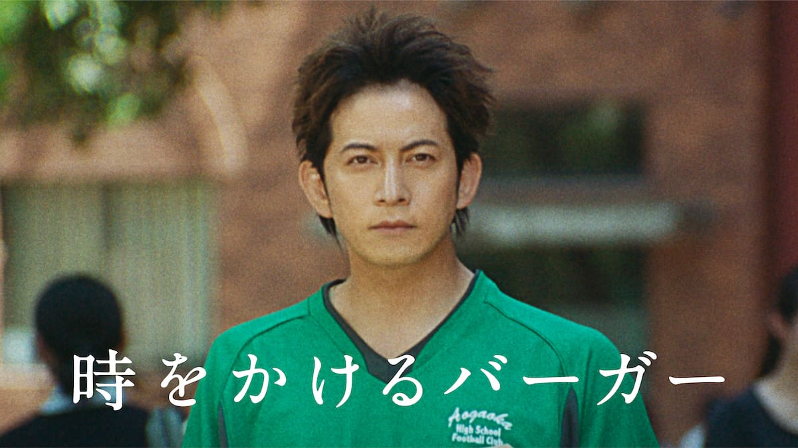
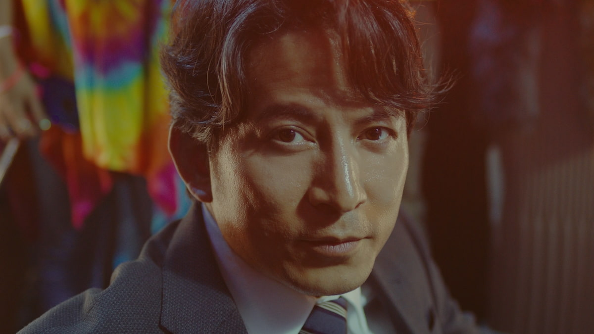
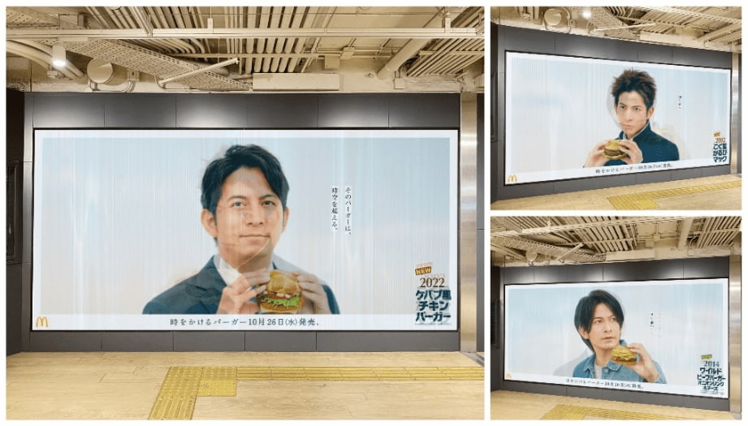

案例发生了什么




一名球迷在 2002 年购买世界杯限定汉堡，却意外穿越到 2014 和 2022；每到一个年代，门店、服装、手机和足球记忆都变化，但一份汉堡成为穿越线索。
3 分 48 秒网络短片串联三款复刻汉堡；商品在门店限时回归；日本枚方市车站投放随视角切换年代的柱面户外，把影片的穿越机制继续带到线下。
MARKETING KNOWLEDGE ROUTER · 营销知识路由器
营销启发卡
把历届经典的记忆点、商业结构和迁移方法放在同一层阅读。 卡片底部按主题连接全站相关案例、经典方法与深度文章。
核心动作
老球迷“我当年在哪里看球”的怀旧，以及年轻观众识别三个时代差异的游戏感；咬下一口汉堡，球迷从 2002 穿越到 2014，再来到 2022。
传播与商业机制
麦当劳用历届限定商品和门店场景证明自己一直在球迷日常里；产品不是片尾植入，而是推动时间旅行的道具；3 分 48 秒网络短片串联三款复刻汉堡；商品在门店限时回归；日本枚方市车站投放随视角切换年代的柱面户外，把影片的穿越机制继续带到线下。
可复用的方法
复刻商品最怕只剩情怀；让消费者熟悉的商品成为时间线索，才能同时解释品牌历史和当下购买理由。
适用条件、风险与证据
- 历史造型、商品配方、赛事标识与广告档案需要逐项核权；怀旧也不能替代新品动销结果。
- 后续复盘还应补齐发布主体、时间线、真实执行图、媒介范围和结果口径；没有这些证据时，不把行业评价或赛事总热度写成品牌增量。
资料与来源
官方资料与原始来源
市场 / 权益
全球/多市场
官方赞助商
创意打法
怀旧时间线型；限定商品型；长片与户外联动型
- AdverTimes · 2022-10-27日本麦当劳“时空汉堡”影片、商品与户外复盘
- 日本麦当劳 · 2022-10-19“时空汉堡”三款商品与 3 分 48 秒短片官方发布
- 4A广告网 · 2022-10-20本页真实案例图片主源
来源按品牌/官方发布、官方账号留存、权威媒体、获奖案例库分层记录；品牌与奖项自报结果不视作独立审计。